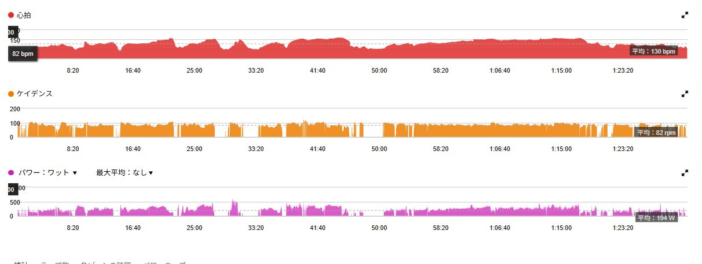
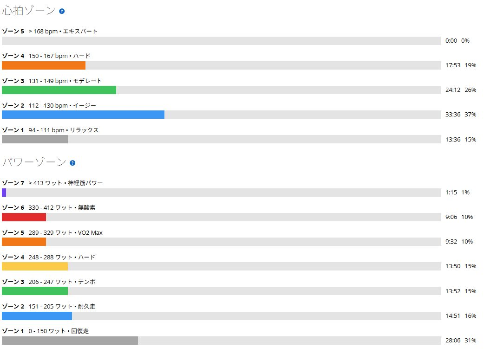
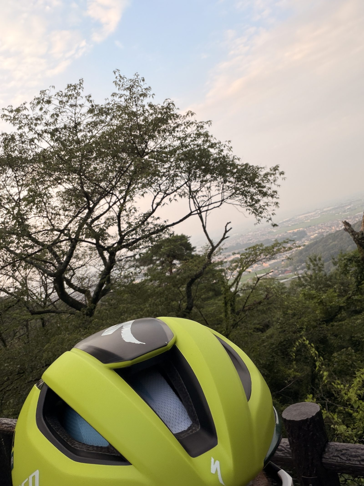
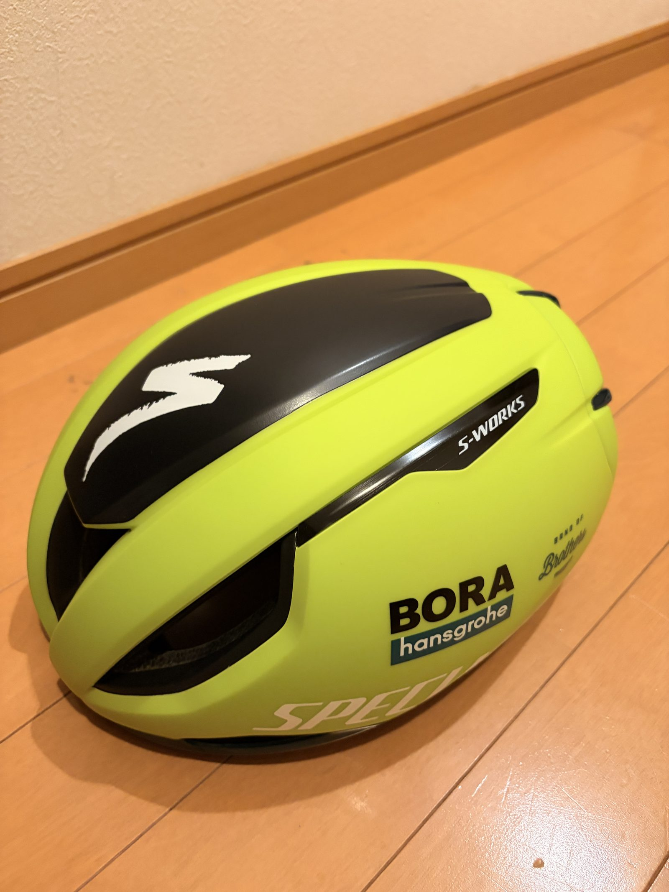

太平の後に278Wを17分半。275Wが「長く踏める数字」になってきた
早朝の太平へ走りに行った。平均気温は27℃ほどだったが湿度が高く、思った以上に汗が出る。涼しいというより、まだ本格的に暑くなる前に走れたという感じだった。
それでも太平は7分26秒・308W。その後の帰り道でも278Wを17分半続けられた。今日の収穫は山の数字より、脚を使った後にもFTP付近を長く踏めたことだと思う。

湿度の高い早朝でもパワーは出た
走行距離は41.91km、走行時間は1時間31分、獲得標高は476m。平均パワー194W、NP249W、TSS123だった。平均気温は26.8℃で最高30℃。Garminの推定発汗量は約1.2Lになっている。
気温だけなら真夏としては低めだが、今日は湿度の影響が大きかったのだと思う。身体が冷えにくく、山に着く前からかなり汗が出ていた。それでも短い登りでは319W、346W、442Wと反応できていた。

太平は7分26秒・308W
太平は7分26秒、平均308W、NP317W。平均心拍150bpm、最大161bpm、平均ケイデンス89rpmだった。75kg基準では約4.11W/kgになる。
前回は7分28秒・302Wだったので、ほぼ同じ時間で6W上がった。大幅な更新ではない。それでも湿度が高く汗の多い条件で最後まで300Wを超えてまとめられたので、少しずつ安定してきた感覚がある。
太平の後に17分半・278W
今日いちばんの収穫は太平の後だった。帰り道で17分36秒、平均278W、NP283W。平均心拍149bpm、平均ケイデンス86rpmで走れた。
FTP設定は275Wなので、脚を使った後にもほぼFTPを17分半続けられたことになる。75kg基準では約3.71W/kg。以前は275Wという数字を見るだけで身構えていたが、最近は「しばらく踏める数字」に少しずつ変わってきた。

FTP設定はまだ275Wのまま
最近のゴルビー、太平、持続走を見ると、FTP275Wは少し低めかもしれない。ただし今すぐ上げるつもりはない。変化の多い外ライドでは短い高出力がNPを押し上げるため、IFが高いだけでFTP設定が間違っているとは言い切れない。
今は275Wを基準にして、どこまで長く踏めるかを見る。30分から40分を285〜300Wで安定して走れたり、室内SSTの心拍や体感が明らかに下がったりしたら、改めて測り直せばいい。
新しいS-Works Evade 3を初めて使った
今日はS-Works Evade 3を初めて使った。性能差を一度のライドで語るつもりはないが、新しい装備は被るだけで気分が上がる。練習は苦しいものの、こういう小さな楽しさがあると早朝でも外へ出やすい。
テンション上がるぜ。


明日は室内でSST25分×2
明日はローラーで242〜243Wを25分×2本行う予定。前回は243Wで20分×2本を完遂しているので、出力は上げずに1本あたり5分だけ延ばす。
外では高い出力を出す。室内では一定出力を長く続ける。役割を分けながら、275Wをさらに現実的な数字へ近づけていく。
今回やってみて思ったこと
今日は湿度が高く、太平も帰りの持続走も楽ではなかった。それでも308Wで登り、その後に278Wを17分半。FTPを上げる段階とまでは言えないが、以前より確実に近づいている。
富士ヒルで必要なのは一瞬だけ高いパワーを出すことではなく、高いパワーを長く続けること。外では強く、室内では長く。この流れで少しずつ積み上げていく。
自分用メモ
- 太平7分26秒 / 308W / NP317W / 約4.11W/kg
- 帰りの持続走17分36秒 / 278W / NP283W / 約3.71W/kg
- 全体41.91km / 1時間31分 / 476mアップ
- 負荷平均194W / NP249W / IF0.905 / TSS123
- 心拍平均130bpm / 最大161bpm
- 次回242〜243WでSST25分×2